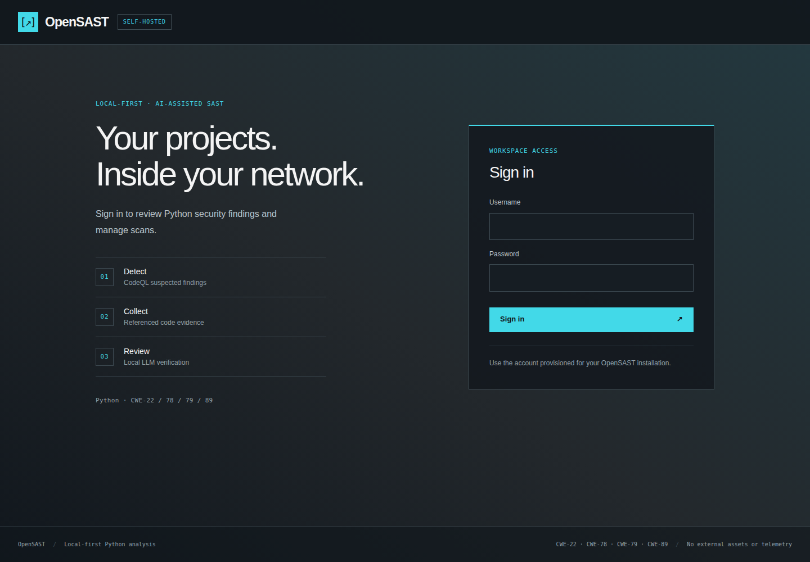
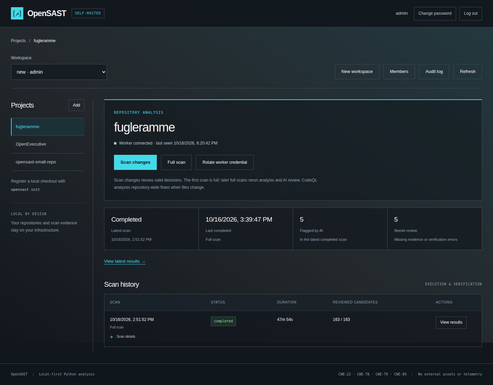
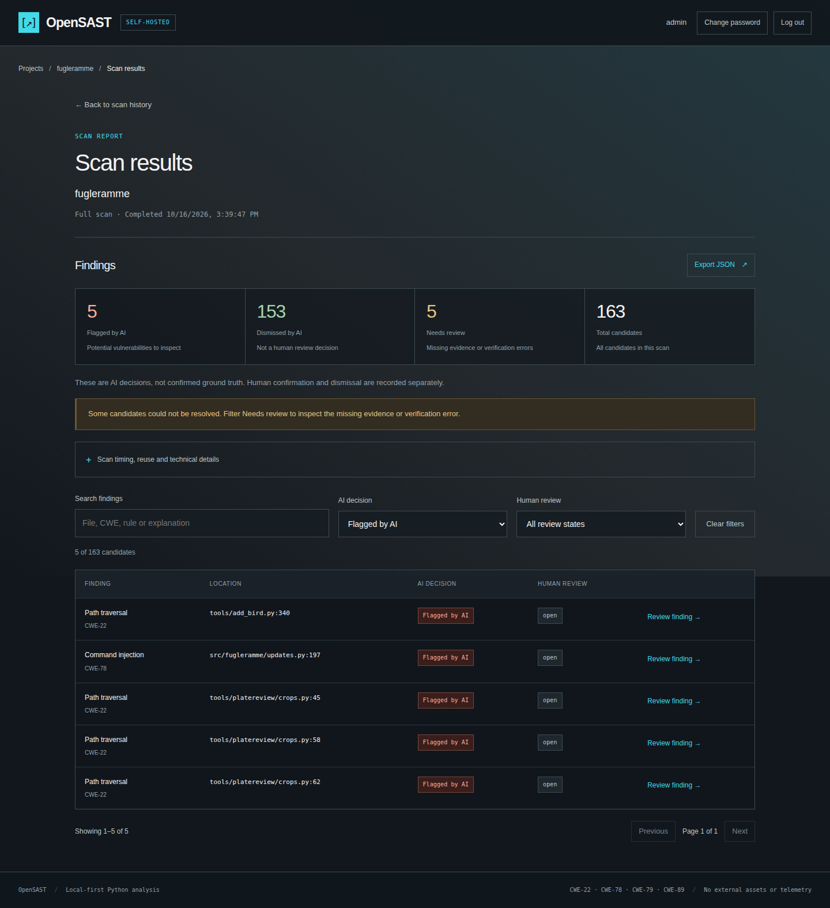
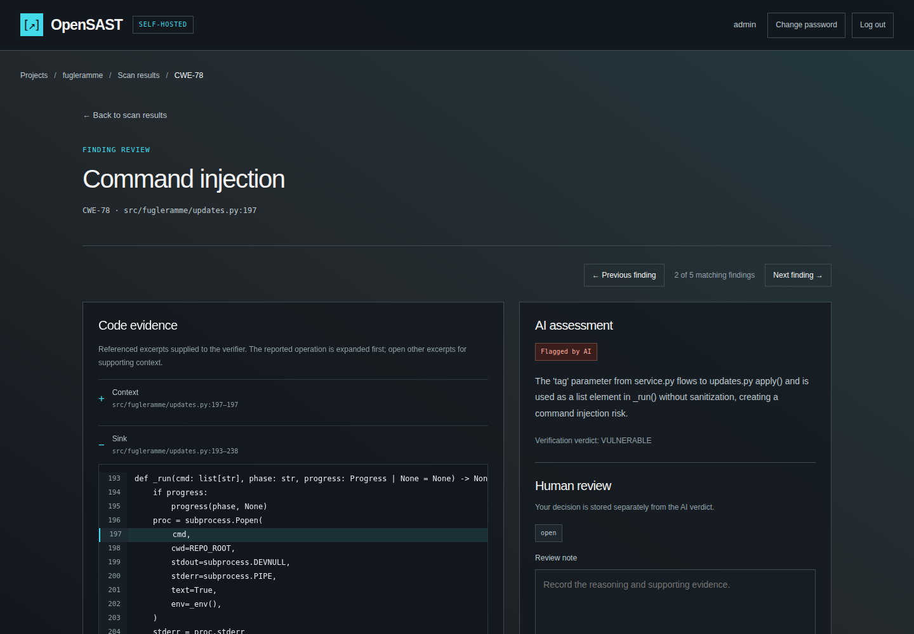

OpenSAST / User documentation
Dashboard walkthrough
See the current interface from sign-in through evidence review. Captured from the running application on 16 October 2026.
New to OpenSAST? Follow the seven-step first scan guide. These pages explain the details when you need them.
1 — Sign in
Open your own dashboard address and enter the account provisioned during setup. The login screen explains the detect, collect, and review stages. There is no default password.

2 — Select a project and inspect its scan history
Select an accessible workspace and project. Check the worker connection, latest scan status, and history. Use Scan changes for normal rescans or Full scan to bypass reuse. Open View results after completion.

3 — Read the result categories and filter findings
The result page separates Flagged by AI, Dismissed by AI, Needs review, and the total candidate count. Search or filter before selecting Review finding.

4 — Inspect evidence and record a separate review
The finding page places referenced code beside the AI assessment and human-review controls. Expand supporting excerpts, trace who controls the input, and check defenses and execution semantics. Record your reasoning before confirming or dismissing a finding. Leave it open when evidence is insufficient.
